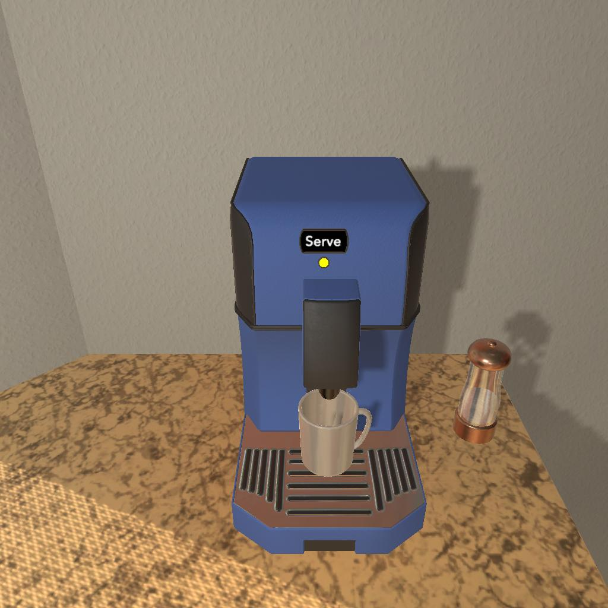

---------------------------------------------------------task: 15---------------------------------------------------------
--------------------------------------------------------------------------------------------------------------------------------------------------------------------
--------------------------------------------------------------------------------------------------------------------------------------------------------------------
Step:--------------------------------------------------------------------------17-------------------------------------------------------------------------------
----------------------------------------
VLM Prompt:
**Task**
Please perform as an embodied AI agent. Our final objective is to cool some mug and put it in coffeemachine. Below is the plan for completing the task, the current observation, alongside historical data and admissible actions for the next step. Please determine the best action for the next step!
**Plan**
Below is a detailed step-by-step plan to complete the task.
1. Find a mug.
2. Pick up the mug.
3. Find a fridge.
4. Cool the mug with the fridge.
5. Find a coffee machine.
6. Place the cooled mug in the coffee machine.
**Current Observation**
Displayed is an image capturing the current position of the agent.
**History Information**
Displayed are the previous observations with their corresponding actions.
Current State 1:
1. Place: Unknown
2. Step Index in Plan: 1
3. Objects: countertop, coffee machine
4. Action: go to cabinet 1
Current State 2:
1. Place: Unknown, near a countertop and a coffee machine
2. Step Index in Plan: 1
3. Objects: Countertop, sink, coffee machine, cabinet 1 (previously checked), cabinet 2
4. Action: Go to cabinet 2
Current State 3:
1. Place: In front of cabinet 2
2. Step Index in Plan: 1
3. Objects: Cabinet 2 (closed)
4. Action: Open cabinet 2
Current State 4:
1. Place: In front of cabinet 2
2. Step Index in Plan: 1
3. Objects: mug
4. Action: go to cabinet 4
Current State 5:
1. Place: In front of a closed cabinet labeled as cabinet 4
2. Step Index in Plan: 1
3. Objects: Mug
4. Action: Open cabinet 4
Current State 6:
1. Place: In front of cabinet 4
2. Step Index in Plan: 1
3. Objects: Mug, cabinet 4, fridge, countertop
4. Action: Take mug 1 from cabinet 4
Current State 7:
1. Place: In front of a fridge and a countertop
2. Step Index in Plan: 2
3. Objects: Fridge, Countertop
4. Action: Go to fridge 1
Current State 8:
1. Place: In front of fridge 1
2. Step Index in Plan: 4
3. Objects: Fridge 1, Mug
4. Action: Open fridge 1
Current State 9:
1. Place: In front of fridge 1
2. Step Index in Plan: 4
3. Objects: mug 1, fridge 1, pan 1, cup 1, potato 1
4. Action: close fridge 1
Current State 10:
1. Place: In front of the fridge
2. Step Index in Plan: 4
3. Objects: Mug, Fridge, Coffee Machine
4. Action: Go to coffee machine 1
Current State 14:
1. Place: In front of the coffee machine
2. Step Index in Plan: Step 6
3. Objects: Coffee machine, mug
4. Action: Take mug 1 from coffee machine 1
Current State 15:
1. Place: Coffee machine area
2. Step Index in Plan: 7
3. Objects: Mug 1, Coffee machine 1
4. Action: Put mug 1 in coffee machine 1
**Admissible Actions**
(1): go to cabinet 1
(2): go to cabinet 2
(3): go to cabinet 3
(4): go to fridge 1
(5): go to countertop 1
(6): go to cabinet 4
(7): go to cabinet 5
(8): go to cabinet 6
(9): go to cabinet 7
(10): go to drawer 1
(11): go to drawer 2
(12): go to cabinet 8
(13): go to drawer 3
(14): go to cabinet 9
(15): go to cabinet 10
(16): go to drawer 4
(17): go to microwave 1
(18): go to cabinet 11
(19): go to toaster 1
(20): go to cabinet 12
(21): go to cabinet 13
(22): go to cabinet 14
(23): go to cabinet 15
(24): go to countertop 2
(25): go to garbagecan 1
(26): go to countertop 3
(27): go to countertop 4
(28): go to sink 1
(29): go to stoveburner 1
(30): go to stoveburner 2
(31): go to stoveburner 3
(32): go to sinkbasin 1
(33): take mug 1 from coffeemachine 1
(34): take saltshaker 2 from coffeemachine 1
**Analysis Guideline**
1. Analyze the **History Information** and determine our current step in the plan and our current place.
2. List all visible objects related to the task in the current observation.
3. Analyze the objects in the current observation based on the history and the requirements for the current step, and then determine if we can complete the step with the current observation.
4. Analyze and decide on the most appropriate action to take.
5. Summarize the analysis using the following format: "Analysis: [The summarization of the analysis], The Most Appropriate Action: (i which is the integer.): [Selected action]"
**Notes**
1. We must complete each step of the plan in order and cannot skip steps when the previous ones are not finished.
2. For "Go to" actions listed as "go to xxx [n]", interpret this as there are n distinct actions available: "go to xxx 1", "go to xxx 2", ..., "go to xxx n". Select one specific action from these options instead of using "go to xxx [n]".
3. If receptacles such as drawers, cabinets, and so forth are closed in the current observation, we may try to open them.
4. Pay attention to synonyms and ensure clarity in the terms used.
5. If there is no history available, we are at the first step and the current place is "Unknown".
6. The most appropriate action must be in the **Admissible Actions**, and we cannot generate a new action that is not in the **Admissible Actions**.
**Answer**
Please select the most suitable action by following the **Analysis Guideline**, keeping the above **Notes** in mind.
----------------------------------------
----------------------------------------
VLM Response:
Analysis: Based on the History Information, we are currently at step 6 in the plan, which is to place the cooled mug in the coffee machine. The Current Observation shows that the agent is in front of the coffee machine with a mug already placed in it. As the history states that the agent has already cooled the mug and the admissible actions do not include any further steps in the cooling process, we can assume the mug is already cooled. Thus, the current step in the plan has been completed.
The Most Appropriate Action: (33): take mug 1 from coffeemachine 1
This action is chosen because the plan does not specify that the mug should be served with coffee, only that it should be placed in the coffee machine. Since the mug is already in the coffee machine, the next logical step would be to take it out, completing the task.
----------------------------------------
----------------------------------------
>>> Refine VLM Response and Get Pure Action: take mug 1 from coffeemachine 1
This action is chosen because the plan does not specify that the mug should be served with coffee, only that it should be placed in the coffee machine
----------------------------------------
-----------------------------------------------------------------
Running time: 15.179208993911743 seconds
Total Money: 7.591849999999995
-----------------------------------------------------------------
-----------------------------------------------------------------
Summarization Prompt:
**Context**
Analysis: Based on the History Information, we are currently at step 6 in the plan, which is to place the cooled mug in the coffee machine. The Current Observation shows that the agent is in front of the coffee machine with a mug already placed in it. As the history states that the agent has already cooled the mug and the admissible actions do not include any further steps in the cooling process, we can assume the mug is already cooled. Thus, the current step in the plan has been completed.
The Most Appropriate Action: (33): take mug 1 from coffeemachine 1
This action is chosen because the plan does not specify that the mug should be served with coffee, only that it should be placed in the coffee machine. Since the mug is already in the coffee machine, the next logical step would be to take it out, completing the task.
**Summary Format**
1. Place: [Specify the current location]
2. Step Index in Plan: [Dispkay the current step number in the plan before taking the current action]
3. Objects: [List the objects relevant to the task]
4. Action: [Describe the most appropriate action without the "(x)" and keep the integer of the object]
Please analyze the **Context** and summarize the analysis using the **Summary Format**.
-----------------------------------------------------------------
-----------------------------------------------------------------
Summarization Response:
1. Place: In front of the coffee machine
2. Step Index in Plan: 6
3. Objects: Mug 1, Coffee machine 1
4. Action: Take mug 1 from coffee machine 1
-----------------------------------------------------------------
-----------------------------------------------------------------
Text Observation:You pick up the mug 1 from the coffee machine.
-----------------------------------------------------------------
UNSUCCEED